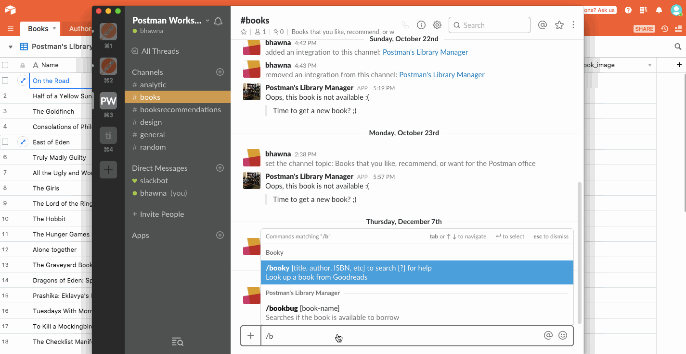

Librarian
Built a serverless Slack app using Postman and Airtable
Librarian is a serverless slack app - built using Postman and Airtable - to check the availability of a book in the office library. In this case, we are searching for a book using a Slack app, and also storing the books that we have in the Postman office using Airtable as a database.
As someone who was responsible to design Postman, it was my top responsibility to learn about, and internalize the product as much as possible. I did NOT have much knowledge about APIs when I had started my stint with Postman. However, seeing people around me use it, looking at feature requests (on github, slack, zendesk, twitter and other channels), and using the product myself helped me learn about API development. I really wanted to pick up a real use case and actually build something using Postman.
One day I got this idea of making a library manager app, and immediately started building it. After a few days - and a LOT of debugging - I felt elated to see the Slack command actually working! I made this graphic to illustrate the data flow and the control flow -
The collection documentation contains step-by-step instructions on getting started.